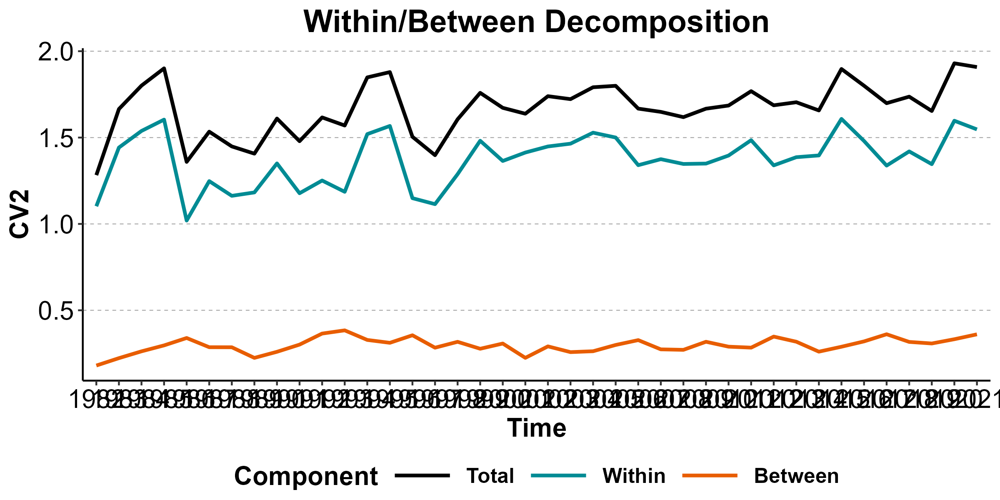
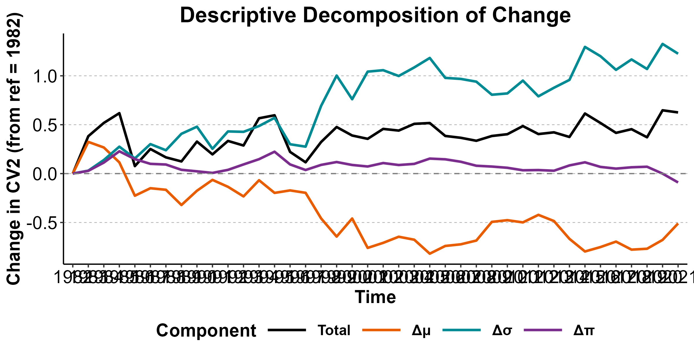
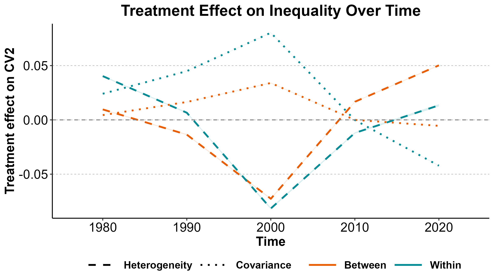
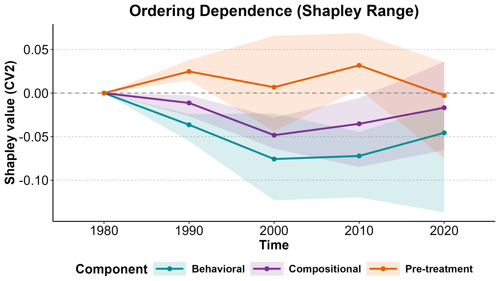

Two short worked examples. Both run on the package’s bundled
cps_sample (a 65k-row CPS subsample, 1982–2021) and aim to
show the package’s two main modes — descriptive and causal — without
doing a full analysis.
- Example 1: Descriptive within/between decomposition
- Example 2: Causal decomposition — the motherhood penalty
Example 1: Descriptive within/between decomposition
Women in cps_sample are grouped into low/medium/high SES
(SES = 1, 2, 3) based on household income. We ask: how much
earnings inequality lies within each SES tier vs
between tiers, and how has that changed since 1982?
desc <- ineqx(
y = "earnweekf", ystat = "CV2",
group = "SES",
time = "year", ref = 1982,
weights = "earnwtf",
data = cps_sample
)We use ystat = "CV2" (squared coefficient of variation,
)
rather than "Var" so that the high-income tier doesn’t
mechanically dominate the decomposition. "VL" (variance of
logs) is also accepted but is generally not recommended — see the
FAQ.
print(desc)
#> Descriptive variance decomposition
#> Inequality measure: CV2
#> Reference period: 1982
#> Ordering: shapley
#>
#> Totals by time:
#> time CV2W CV2B CV2T
#> 1982 1.102 0.1802 1.283
#> 1983 1.442 0.2230 1.665
#> 1984 1.538 0.2624 1.801
#> 1985 1.604 0.2968 1.901
#> 1986 1.020 0.3396 1.359
#> 1987 1.248 0.2863 1.534
#> 1988 1.163 0.2860 1.449
#> 1989 1.182 0.2245 1.407
#> 1990 1.350 0.2597 1.610
#> 1991 1.178 0.3013 1.479
#> 1992 1.251 0.3653 1.617
#> 1993 1.186 0.3839 1.570
#> 1994 1.520 0.3283 1.848
#> 1995 1.567 0.3118 1.879
#> 1996 1.149 0.3554 1.505
#> 1997 1.115 0.2835 1.398
#> 1998 1.288 0.3175 1.606
#> 1999 1.481 0.2774 1.759
#> 2000 1.364 0.3076 1.672
#> 2001 1.413 0.2247 1.638
#> 2002 1.448 0.2911 1.740
#> 2003 1.465 0.2579 1.722
#> 2004 1.528 0.2630 1.791
#> 2005 1.500 0.2993 1.800
#> 2006 1.340 0.3273 1.668
#> 2007 1.375 0.2738 1.649
#> 2008 1.347 0.2711 1.618
#> 2009 1.349 0.3178 1.667
#> 2010 1.396 0.2894 1.685
#> 2011 1.485 0.2838 1.769
#> 2012 1.339 0.3478 1.687
#> 2013 1.386 0.3181 1.704
#> 2014 1.397 0.2605 1.657
#> 2015 1.608 0.2890 1.897
#> 2016 1.480 0.3199 1.800
#> 2017 1.338 0.3613 1.699
#> 2018 1.420 0.3169 1.737
#> 2019 1.346 0.3079 1.654
#> 2020 1.597 0.3326 1.930
#> 2021 1.547 0.3608 1.908
#>
#> Decomposition of changes in CV2 relative to ref = 1982:
#>
#> time 1982: (reference)
#>
#> time 1983:
#> Between-group (delta_mu): 0.3242
#> Between-group: 0.0187
#> Within-group: 0.3055
#> Within-group (delta_sigma): 0.0300
#> Compositional (delta_pi): 0.0284
#> Between-group: 0.0241
#> Within-group: 0.0043
#> Total: 0.3825
#>
#> time 1984:
#> Between-group (delta_mu): 0.2669
#> Between-group: 0.0302
#> Within-group: 0.2367
#> Within-group (delta_sigma): 0.1388
#> Compositional (delta_pi): 0.1125
#> Between-group: 0.0520
#> Within-group: 0.0604
#> Total: 0.5181
#>
#> time 1985:
#> Between-group (delta_mu): 0.1145
#> Between-group: 0.0356
#> Within-group: 0.0789
#> Within-group (delta_sigma): 0.2754
#> Compositional (delta_pi): 0.2282
#> Between-group: 0.0810
#> Within-group: 0.1472
#> Total: 0.6181
#>
#> time 1986:
#> Between-group (delta_mu): -0.2263
#> Between-group: 0.0905
#> Within-group: -0.3168
#> Within-group (delta_sigma): 0.1551
#> Compositional (delta_pi): 0.1478
#> Between-group: 0.0689
#> Within-group: 0.0790
#> Total: 0.0766
#>
#> time 1987:
#> Between-group (delta_mu): -0.1496
#> Between-group: 0.0744
#> Within-group: -0.2240
#> Within-group (delta_sigma): 0.3015
#> Compositional (delta_pi): 0.0997
#> Between-group: 0.0317
#> Within-group: 0.0680
#> Total: 0.2516
#>
#> time 1988:
#> Between-group (delta_mu): -0.1656
#> Between-group: 0.0691
#> Within-group: -0.2347
#> Within-group (delta_sigma): 0.2389
#> Compositional (delta_pi): 0.0928
#> Between-group: 0.0366
#> Within-group: 0.0561
#> Total: 0.1661
#>
#> time 1989:
#> Between-group (delta_mu): -0.3214
#> Between-group: 0.0230
#> Within-group: -0.3444
#> Within-group (delta_sigma): 0.4070
#> Compositional (delta_pi): 0.0386
#> Between-group: 0.0213
#> Within-group: 0.0173
#> Total: 0.1243
#>
#> time 1990:
#> Between-group (delta_mu): -0.1754
#> Between-group: 0.0614
#> Within-group: -0.2369
#> Within-group (delta_sigma): 0.4797
#> Compositional (delta_pi): 0.0233
#> Between-group: 0.0181
#> Within-group: 0.0052
#> Total: 0.3275
#>
#> time 1991:
#> Between-group (delta_mu): -0.0642
#> Between-group: 0.0920
#> Within-group: -0.1562
#> Within-group (delta_sigma): 0.2537
#> Compositional (delta_pi): 0.0070
#> Between-group: 0.0291
#> Within-group: -0.0221
#> Total: 0.1964
#>
#> time 1992:
#> Between-group (delta_mu): -0.1353
#> Between-group: 0.1465
#> Within-group: -0.2818
#> Within-group (delta_sigma): 0.4312
#> Compositional (delta_pi): 0.0382
#> Between-group: 0.0386
#> Within-group: -0.0004
#> Total: 0.3341
#>
#> time 1993:
#> Between-group (delta_mu): -0.2333
#> Between-group: 0.1576
#> Within-group: -0.3909
#> Within-group (delta_sigma): 0.4271
#> Compositional (delta_pi): 0.0935
#> Between-group: 0.0461
#> Within-group: 0.0475
#> Total: 0.2873
#>
#> time 1994:
#> Between-group (delta_mu): -0.0680
#> Between-group: 0.0852
#> Within-group: -0.1532
#> Within-group (delta_sigma): 0.4865
#> Compositional (delta_pi): 0.1473
#> Between-group: 0.0629
#> Within-group: 0.0845
#> Total: 0.5659
#>
#> time 1995:
#> Between-group (delta_mu): -0.1974
#> Between-group: 0.0513
#> Within-group: -0.2488
#> Within-group (delta_sigma): 0.5700
#> Compositional (delta_pi): 0.2239
#> Between-group: 0.0803
#> Within-group: 0.1436
#> Total: 0.5964
#>
#> time 1996:
#> Between-group (delta_mu): -0.1719
#> Between-group: 0.1218
#> Within-group: -0.2937
#> Within-group (delta_sigma): 0.3001
#> Compositional (delta_pi): 0.0938
#> Between-group: 0.0534
#> Within-group: 0.0404
#> Total: 0.2220
#>
#> time 1997:
#> Between-group (delta_mu): -0.1966
#> Between-group: 0.0710
#> Within-group: -0.2676
#> Within-group (delta_sigma): 0.2754
#> Compositional (delta_pi): 0.0367
#> Between-group: 0.0323
#> Within-group: 0.0044
#> Total: 0.1155
#>
#> time 1998:
#> Between-group (delta_mu): -0.4586
#> Between-group: 0.1011
#> Within-group: -0.5596
#> Within-group (delta_sigma): 0.6926
#> Compositional (delta_pi): 0.0890
#> Between-group: 0.0362
#> Within-group: 0.0528
#> Total: 0.3231
#>
#> time 1999:
#> Between-group (delta_mu): -0.6443
#> Between-group: 0.0453
#> Within-group: -0.6895
#> Within-group (delta_sigma): 1.0023
#> Compositional (delta_pi): 0.1183
#> Between-group: 0.0519
#> Within-group: 0.0664
#> Total: 0.4763
#>
#> time 2000:
#> Between-group (delta_mu): -0.4592
#> Between-group: 0.0780
#> Within-group: -0.5373
#> Within-group (delta_sigma): 0.7606
#> Compositional (delta_pi): 0.0882
#> Between-group: 0.0493
#> Within-group: 0.0388
#> Total: 0.3895
#>
#> time 2001:
#> Between-group (delta_mu): -0.7600
#> Between-group: 0.0080
#> Within-group: -0.7681
#> Within-group (delta_sigma): 1.0428
#> Compositional (delta_pi): 0.0727
#> Between-group: 0.0364
#> Within-group: 0.0363
#> Total: 0.3555
#>
#> time 2002:
#> Between-group (delta_mu): -0.7083
#> Between-group: 0.0741
#> Within-group: -0.7824
#> Within-group (delta_sigma): 1.0574
#> Compositional (delta_pi): 0.1079
#> Between-group: 0.0369
#> Within-group: 0.0711
#> Total: 0.4570
#>
#> time 2003:
#> Between-group (delta_mu): -0.6458
#> Between-group: 0.0471
#> Within-group: -0.6929
#> Within-group (delta_sigma): 0.9981
#> Compositional (delta_pi): 0.0877
#> Between-group: 0.0305
#> Within-group: 0.0571
#> Total: 0.4399
#>
#> time 2004:
#> Between-group (delta_mu): -0.6762
#> Between-group: 0.0365
#> Within-group: -0.7127
#> Within-group (delta_sigma): 1.0857
#> Compositional (delta_pi): 0.0993
#> Between-group: 0.0463
#> Within-group: 0.0529
#> Total: 0.5087
#>
#> time 2005:
#> Between-group (delta_mu): -0.8191
#> Between-group: 0.0443
#> Within-group: -0.8634
#> Within-group (delta_sigma): 1.1826
#> Compositional (delta_pi): 0.1535
#> Between-group: 0.0748
#> Within-group: 0.0787
#> Total: 0.5170
#>
#> time 2006:
#> Between-group (delta_mu): -0.7400
#> Between-group: 0.0700
#> Within-group: -0.8099
#> Within-group (delta_sigma): 0.9788
#> Compositional (delta_pi): 0.1461
#> Between-group: 0.0771
#> Within-group: 0.0690
#> Total: 0.3850
#>
#> time 2007:
#> Between-group (delta_mu): -0.7233
#> Between-group: 0.0326
#> Within-group: -0.7558
#> Within-group (delta_sigma): 0.9683
#> Compositional (delta_pi): 0.1211
#> Between-group: 0.0611
#> Within-group: 0.0601
#> Total: 0.3661
#>
#> time 2008:
#> Between-group (delta_mu): -0.6848
#> Between-group: 0.0341
#> Within-group: -0.7189
#> Within-group (delta_sigma): 0.9402
#> Compositional (delta_pi): 0.0803
#> Between-group: 0.0567
#> Within-group: 0.0236
#> Total: 0.3357
#>
#> time 2009:
#> Between-group (delta_mu): -0.4939
#> Between-group: 0.0833
#> Within-group: -0.5772
#> Within-group (delta_sigma): 0.8065
#> Compositional (delta_pi): 0.0720
#> Between-group: 0.0542
#> Within-group: 0.0177
#> Total: 0.3846
#>
#> time 2010:
#> Between-group (delta_mu): -0.4765
#> Between-group: 0.0618
#> Within-group: -0.5383
#> Within-group (delta_sigma): 0.8199
#> Compositional (delta_pi): 0.0594
#> Between-group: 0.0474
#> Within-group: 0.0120
#> Total: 0.4028
#>
#> time 2011:
#> Between-group (delta_mu): -0.4991
#> Between-group: 0.0622
#> Within-group: -0.5613
#> Within-group (delta_sigma): 0.9512
#> Compositional (delta_pi): 0.0340
#> Between-group: 0.0414
#> Within-group: -0.0074
#> Total: 0.4861
#>
#> time 2012:
#> Between-group (delta_mu): -0.4220
#> Between-group: 0.1190
#> Within-group: -0.5410
#> Within-group (delta_sigma): 0.7901
#> Compositional (delta_pi): 0.0362
#> Between-group: 0.0486
#> Within-group: -0.0124
#> Total: 0.4043
#>
#> time 2013:
#> Between-group (delta_mu): -0.4851
#> Between-group: 0.0871
#> Within-group: -0.5722
#> Within-group (delta_sigma): 0.8777
#> Compositional (delta_pi): 0.0293
#> Between-group: 0.0508
#> Within-group: -0.0215
#> Total: 0.4219
#>
#> time 2014:
#> Between-group (delta_mu): -0.6674
#> Between-group: 0.0374
#> Within-group: -0.7048
#> Within-group (delta_sigma): 0.9583
#> Compositional (delta_pi): 0.0836
#> Between-group: 0.0429
#> Within-group: 0.0407
#> Total: 0.3745
#>
#> time 2015:
#> Between-group (delta_mu): -0.7966
#> Between-group: 0.0779
#> Within-group: -0.8744
#> Within-group (delta_sigma): 1.2956
#> Compositional (delta_pi): 0.1154
#> Between-group: 0.0309
#> Within-group: 0.0845
#> Total: 0.6144
#>
#> time 2016:
#> Between-group (delta_mu): -0.7514
#> Between-group: 0.1163
#> Within-group: -0.8678
#> Within-group (delta_sigma): 1.2006
#> Compositional (delta_pi): 0.0683
#> Between-group: 0.0234
#> Within-group: 0.0450
#> Total: 0.5175
#>
#> time 2017:
#> Between-group (delta_mu): -0.6956
#> Between-group: 0.1633
#> Within-group: -0.8589
#> Within-group (delta_sigma): 1.0611
#> Compositional (delta_pi): 0.0509
#> Between-group: 0.0177
#> Within-group: 0.0332
#> Total: 0.4165
#>
#> time 2018:
#> Between-group (delta_mu): -0.7777
#> Between-group: 0.1059
#> Within-group: -0.8836
#> Within-group (delta_sigma): 1.1674
#> Compositional (delta_pi): 0.0646
#> Between-group: 0.0308
#> Within-group: 0.0337
#> Total: 0.4542
#>
#> time 2019:
#> Between-group (delta_mu): -0.7686
#> Between-group: 0.0875
#> Within-group: -0.8561
#> Within-group (delta_sigma): 1.0697
#> Compositional (delta_pi): 0.0702
#> Between-group: 0.0402
#> Within-group: 0.0300
#> Total: 0.3713
#>
#> time 2020:
#> Between-group (delta_mu): -0.6783
#> Between-group: 0.1364
#> Within-group: -0.8147
#> Within-group (delta_sigma): 1.3261
#> Compositional (delta_pi): -0.0004
#> Between-group: 0.0159
#> Within-group: -0.0163
#> Total: 0.6473
#>
#> time 2021:
#> Between-group (delta_mu): -0.5099
#> Between-group: 0.1920
#> Within-group: -0.7020
#> Within-group (delta_sigma): 1.2261
#> Compositional (delta_pi): -0.0905
#> Between-group: -0.0114
#> Within-group: -0.0791
#> Total: 0.6256Within- vs between-group inequality over time:
plot(desc, type = "wibe")
Decomposition of the change since 1982 into contributions from changing means (), changing dispersions (), and changing group shares ():
plot(desc, type = "decomp")
Most of the increase in since 1982 traces to changes in within-group dispersion () — earnings inequality has grown within SES tiers, not just between them. This is the basic motivation for taking within-group inequality seriously.
Example 2: Causal decomposition — the motherhood penalty
Same dataset, now asking a causal question: how does motherhood affect earnings inequality among women, and how has that effect changed?
We restrict the sample to women of childbearing age and fit a
difference-in- differences model (treatment = mother,
post-period = byear) with education-by-decade interactions
for both the mean and log-SD of earnings. GAMLSS does the heavy lifting
internally.
df <- subset(cps_sample,
age >= 18 & age <= 49 & !is.na(earnweekf) & earnweekf > 0)
causal <- ineqx(
y = "earnweekf", ystat = "CV2",
treat = "mother", post = "byear",
group = "edu",
time = "year10", ref = 1980,
formula_mu = ~ mother * byear * factor(edu) * factor(year10) + age,
formula_sigma = ~ mother * byear * factor(edu) * factor(year10),
weights = "earnwtf",
se = "delta",
data = df
)
#> GAMLSS-RS iteration 1: Global Deviance = 3535424937
#> GAMLSS-RS iteration 2: Global Deviance = 3534988768
#> GAMLSS-RS iteration 3: Global Deviance = 3534986071
#> GAMLSS-RS iteration 4: Global Deviance = 3534986056
#> GAMLSS-RS iteration 5: Global Deviance = 3534986056
#> GAMLSS-RS iteration 6: Global Deviance = 3534986056Cross-sectional split: het and cov sub-components
The treatment effect on inequality at each time decomposes into
(between groups) and
(within groups). See the Model structure page
for the exact formulas.
plot(..., type = "wibe", stats = ...) shows all four series
at once:

The dominant series here is het_W — the
within-group component driven by the average treatment effect on log-SD
().
It is negative and large: motherhood compresses within-education
earnings dispersion. The between-group
cov_B term (sorting of mean effects
across education groups) is small and runs in the opposite direction.
Note this is exactly the kind of pattern that mean-based methods
miss.
Longitudinal: behavioral / compositional / pre-treatment
How has the motherhood effect’s contribution to inequality
changed since 1980? type = "shapley" displays the
three-channel decomposition with the range across the six possible
orderings:
plot(causal, type = "shapley")
The compositional channel () is large and negative — the share of childbearing-age women who are mothers has dropped substantially since 1980, and that compositional shift on its own reduces the contribution of motherhood to overall inequality. Behavioral changes (, how motherhood’s per-group effects have changed) are smaller, and pre-treatment shifts (, baseline inequality changes) contribute a modest negative term.
A more thorough analysis would add controls for race, marital status,
age splines, and family size; would model the pre-trends formally; and
would use bootstrap rather than delta-method SEs. See
?ineqx, ?boot_config, and the Tutorial for the full toolbox.